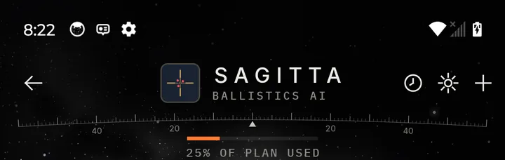
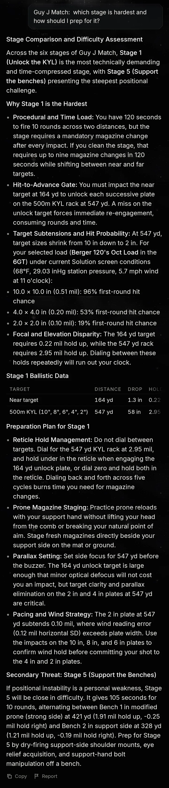
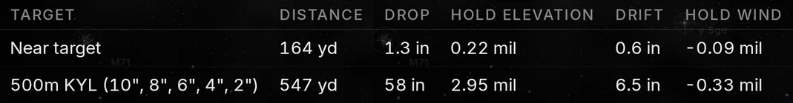
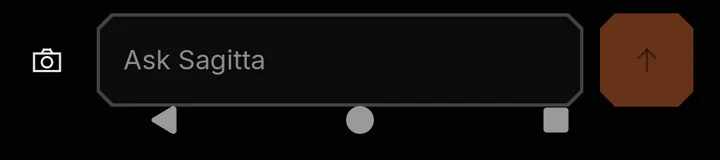

Sagitta Ballistics AI is the core of Bullseye Ballistics. It connects what the solver predicted, what the environment did, what you called and what actually happened, then tells you why you missed and how to fix it.
What the solver predictedWhat the environment didWhat you calledWhat actually happenedUseful training insight
What Sagitta does
Post-shot analysis
Know why you missed
Explains a miss by comparing the solution, the impact, the wind and the air.
Finds patterns, like misses that go left in one wind or high on a cold bore.
Ranks what's costing you most: wind, range, velocity, dispersion, BC or execution.
Wind
Read wind better
Grades your wind calls against the sensors, the hold and where the shot landed.
Suggests a wind bracket, a low and high hold, not just one number.
Shows what your sensors are worth in hits, compared with entering wind by hand.
Truing and loads
True the solver, prove the load
Recommends truing when your misses show your velocity, drag or zero is off.
Compares loads on dispersion, velocity, hit rate, energy and transonic distance.
Checks a load across conditions, like heat, cold and the transonic zone.
Every string
Before and after
Before you fire: your hit chance and what's most likely to limit it.
After: hits, misses and what the conditions did during the string.
Predicted against real: your hit rate, and whether the gap was wind or elevation.
Tracks your progress: hit rate, wind-call error, and a load changing with round count.
Finds cold-bore and clean-bore shifts across sessions.
Training
Plan the next range day
Suggests distances and conditions that would teach your model the most.
Says how sure it is, separating solid conclusions from early hints.
Gets sharper as your log grows.
Matches
Upload the match book. Shoot the match.
Give Sagitta the match book PDF, or a photo of a stage card. It builds the whole match for you: every stage, position, target, distance and target size, in shooting order, with the Match Director's notes for each stage.
01
Upload
The match book PDF the MD sent you, or a photo of one stage card.
02
Sagitta builds it
Stages, positions, targets, distances, sizes and the course of fire, in shooting order.
03
Check it
Each stage shows whether its steps add up to max points. Fix anything with a tap.
04
Shoot it
Start a stage and tap Next after each shot. The solver already has the next distance.
Sagitta points out when a stage's math doesn't add up, so you know what to ask the MD. Stage changed on match day? Take a photo of the new sheet at the bay and Sagitta rebuilds that stage. See how matches work →
Just ask
“Which of my loads perform best at 1,024 yards?”
“At what distance does this load's hit chance fall below 70% in these conditions?”
“How do I read valley winds at long range?”
Sagitta answers from your own rifles, loads, shot log and groups. Show it a target photo, a chronograph screen or a match book, and it reads that too. When it suggests a change, like a new truing, you decide whether to apply it.
Real answer, real data
Ask Sagitta about your match
Sagitta is the Ballistics AI built into Bullseye. Ask it something like “Which stage is hardest and how should I prep for it?” and it answers with your own numbers. It uses your selected load and the conditions on your Solution screen to work out holds, drop, drift and first-round hit chances for each target. Then it gives you a prep plan for the stage. Scroll the answer to see the whole response.



Scroll to read

Scroll the answer, swipe the table
Stage coaching
A stage coach in your pocket
Most shooters learn a stage's traps the hard way: a dropped plate on the clock, a blown reload, a wind call that was never going to hold on a 2 in plate. Sagitta works like a personal stage coach. It looks at the stage, your load and today's conditions. Before the buzzer, it tells you where the stage will beat you and what to do about it.
Ask: What's the hardest stage of this match and how should I prep for it?
Sagitta's preparation plan for Stage 1
Quoted word for word from the Sagitta answer above
01
Reticle Hold Management
Do not dial between targets. Dial for the 547 yd KYL rack at 2.95 mil, and hold under in the reticle when engaging the 164 yd unlock plate, or dial zero and hold both in the reticle. Dialing back and forth across five cycles burns time you need for magazine changes.
02
Prone Magazine Staging
Practice prone reloads with your support hand without lifting your head from the comb or breaking your natural point of aim. Stage fresh magazines directly beside your support side on the mat or ground.
03
Parallax Setting
Set side focus for 547 yd before the buzzer. The 164 yd unlock target is large enough that minor optical defocus will not cost you an impact, but target clarity and parallax elimination on the 2 in and 4 in plates at 547 yd are critical.
04
Pacing and Wind Strategy
The 2 in plate at 547 yd subtends 0.10 mil, where wind reading error (0.12 mil horizontal SD) exceeds plate width. Use the impacts on the 10 in, 8 in, and 6 in plates to confirm wind hold before committing your shot to the 4 in and 2 in plates.
Why it matters
None of these tips are generic. Each one comes from the stage's real distances, target sizes and time limit, run through your own ballistics. Sagitta catches three things here:
the time you lose dialing back and forth
the reload that breaks your position
the plate that's smaller than your wind error
Those are lessons that usually cost a match or two to learn. With Sagitta you get them before you shoot the stage, so you can practice the fix instead of finding the problem on the clock.
Same answers, your attitude
Plain
The default. Short answers first, details if you ask.
Ballistician
Figures, methods and technical terms.
Caveman
Straight dope, every term explained from scratch.
Sassy
Light jabs about your shooting and a sprinkle of humor.
The same match question, answered in Caveman
Your data
Your conversations stay on your phone, and in your backup if you turn backup on.
We don't keep your questions or answers on our server.
Your question, and the records Sagitta needs to answer it, go through our server to Google's Gemini model, which writes the answer. Google can't use them to train its models.
Your longitude is never sent, and location details are removed from photos before they're sent.